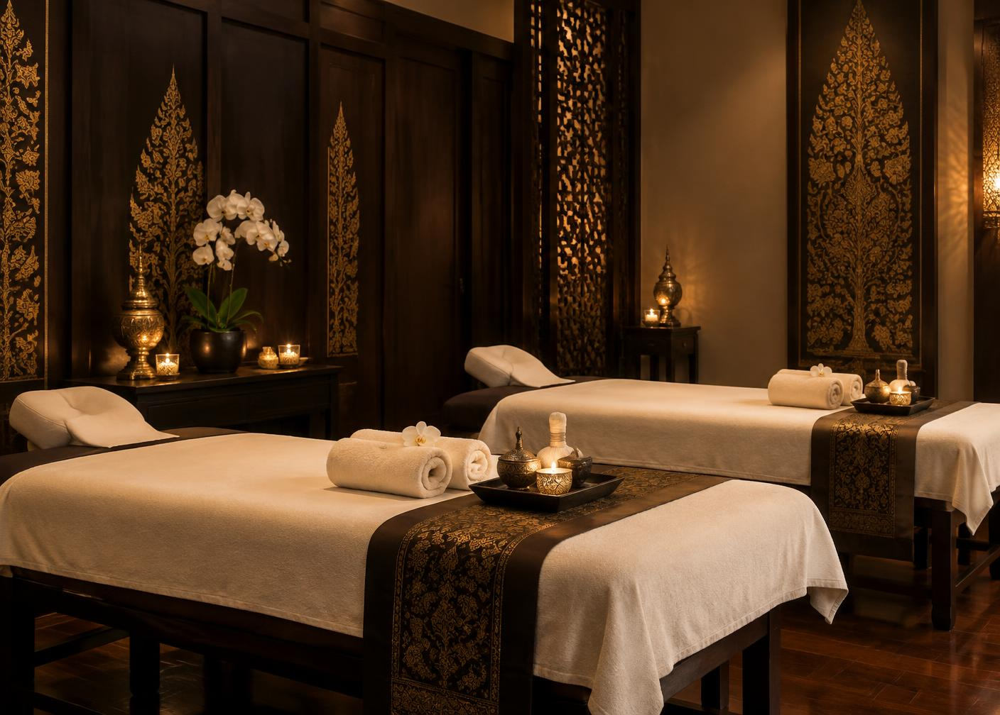

Authentische Thai-Tradition
Inspiriert von traditionellen Anwendungen und echter thailändischer Wellnesskultur.
Bei Royal Krabi Serenity Thaimassage verbinden wir traditionelle thailändische Massagetechniken mit einem stilvollen, ruhigen Ambiente.

Unser Ziel ist es, Ihnen persönliche Erholung vom Alltag zu schenken – mit Aufmerksamkeit, Erfahrung und echter Herzlichkeit.
Inspiriert von traditionellen Anwendungen und echter thailändischer Wellnesskultur.
Jede Anwendung wird mit Aufmerksamkeit auf Ihre persönlichen Bedürfnisse abgestimmt.
Wir schaffen Raum für Ruhe, Erholung und neue Energie.
Die Teamvorstellung wird vor Veröffentlichung mit den finalen Angaben ergänzt.
[Kurze persönliche Beschreibung eintragen]
[Kurze persönliche Beschreibung eintragen]
[Kurze persönliche Beschreibung eintragen]
Vereinbaren Sie Ihren persönlichen Termin telefonisch oder per E-Mail. Di.–Sa.: 10:00–20:00 Uhr · Sonntag und Montag geschlossen.